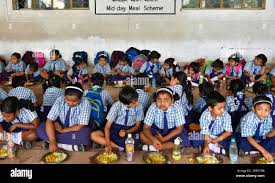

Your Food Donation Makes an Impact
See how your contribution fights hunger

Emergency Food Boxes
Your donations help us provide emergency food boxes to families in crisis.

School Meal Programs
We provide weekend meal kits to 1,200 school children each week.
Senior Nutrition
Over 500 seniors receive monthly nutrition assistance through our programs.